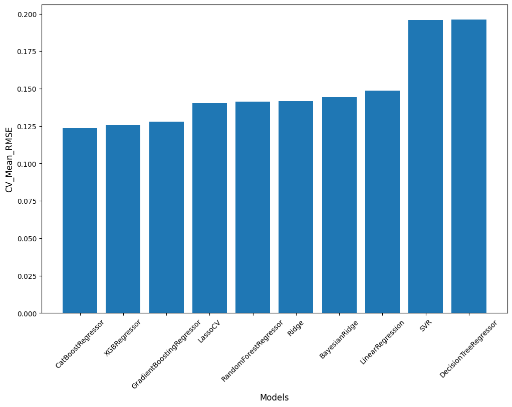

from pathlib import Path
import warnings
warnings.filterwarnings('ignore')
import os
from fastai.imports import *
import seaborn as sns
import scipy.stats as stats
import statsmodels.api as sm
import matplotlib.pyplot as plt
from numpy import random
import graphviz
from sklearn.model_selection import train_test_split
from sklearn.tree import export_graphviz
from xgboost import XGBRegressor
from catboost import Pool
from catboost import CatBoostRegressor
from lightgbm import LGBMRegressor
from sklearn.svm import SVR
from sklearn.naive_bayes import GaussianNB
from sklearn.tree import DecisionTreeRegressor
from mlxtend.regressor import StackingRegressor
from sklearn.linear_model import LinearRegression, BayesianRidge, ElasticNet, Lasso, \
LassoLarsIC, Ridge, RidgeCV, LassoCV, LassoLarsCV, SGDRegressor
from sklearn.model_selection import RepeatedKFold, KFold, cross_val_score, train_test_split, \
GridSearchCV, RandomizedSearchCV
from sklearn.ensemble import GradientBoostingRegressor, RandomForestRegressor
from sklearn.metrics import mean_squared_error, mean_absolute_error, mean_squared_log_error
from sklearn.kernel_ridge import KernelRidge
from sklearn.pipeline import make_pipeline
from sklearn.preprocessing import RobustScaler, PolynomialFeatures
from sklearn.base import BaseEstimator, TransformerMixin, RegressorMixin, clone
#from dtreeviz.trees import *
#from IPython.display import Image, display_svg, SVG
np.set_printoptions(linewidth=130)Regression Examples using Kaggle House Prices Competition

Includes some starting code from Ayman M.’s notebook on Kaggle
if (os.path.exists('data'),os.getcwd().__contains__('data')) == False: os.mkdir('data')
if os.getcwd().__contains__('data') == False: os.chdir('data')
os.getcwd()'/home/ses/workspace/ml-examples/nbs/data'If you haven’t already set up to use Kaggle, see: https://adityashrm21.github.io/Setting-Up-Kaggle/
dataset_name='house-prices-advanced-regression-techniques'
display=True
ensemble=3 # Ensemble using the best n models
iskaggle = os.environ.get('KAGGLE_KERNEL_RUN_TYPE', '')
if iskaggle:
!pip install -Uqq fastai
else:
import zipfile,kaggle
path = Path(dataset_name)
kaggle.api.competition_download_cli(str(path))
zipfile.ZipFile(f'{path}.zip').extractall(path)
if iskaggle: path = Path('../input/'+dataset_name)
if display: path.ls()house-prices-advanced-regression-techniques.zip: Skipping, found more recently modified local copy (use --force to force download)# Read Training and Test Data
df_orig = pd.read_csv(path/'train.csv')
df = df_orig.copy()
tst_df_orig = pd.read_csv(path/'test.csv')
tst_df = tst_df_orig.copy()
modes = df.mode().iloc[0]def compare_columns(df1, df2, display=False):
df1_columns_set = set(df1.columns)
df2_columns_set = set(df2.columns)
if display: print('df1_columns_set - df2_columns_set :', df1_columns_set - df2_columns_set)
if display: print('df2_columns_set - df1_columns_set :', df2_columns_set - df1_columns_set)
compare_columns(df, tst_df, display)df1_columns_set - df2_columns_set : {'SalePrice'}
df2_columns_set - df1_columns_set : set()dep = 'SalePrice'
ind = 'Id'df| Id | MSSubClass | MSZoning | LotFrontage | LotArea | Street | Alley | LotShape | LandContour | Utilities | ... | PoolArea | PoolQC | Fence | MiscFeature | MiscVal | MoSold | YrSold | SaleType | SaleCondition | SalePrice | |
|---|---|---|---|---|---|---|---|---|---|---|---|---|---|---|---|---|---|---|---|---|---|
| 0 | 1 | 60 | RL | 65.0 | 8450 | Pave | NaN | Reg | Lvl | AllPub | ... | 0 | NaN | NaN | NaN | 0 | 2 | 2008 | WD | Normal | 208500 |
| 1 | 2 | 20 | RL | 80.0 | 9600 | Pave | NaN | Reg | Lvl | AllPub | ... | 0 | NaN | NaN | NaN | 0 | 5 | 2007 | WD | Normal | 181500 |
| 2 | 3 | 60 | RL | 68.0 | 11250 | Pave | NaN | IR1 | Lvl | AllPub | ... | 0 | NaN | NaN | NaN | 0 | 9 | 2008 | WD | Normal | 223500 |
| 3 | 4 | 70 | RL | 60.0 | 9550 | Pave | NaN | IR1 | Lvl | AllPub | ... | 0 | NaN | NaN | NaN | 0 | 2 | 2006 | WD | Abnorml | 140000 |
| 4 | 5 | 60 | RL | 84.0 | 14260 | Pave | NaN | IR1 | Lvl | AllPub | ... | 0 | NaN | NaN | NaN | 0 | 12 | 2008 | WD | Normal | 250000 |
| ... | ... | ... | ... | ... | ... | ... | ... | ... | ... | ... | ... | ... | ... | ... | ... | ... | ... | ... | ... | ... | ... |
| 1455 | 1456 | 60 | RL | 62.0 | 7917 | Pave | NaN | Reg | Lvl | AllPub | ... | 0 | NaN | NaN | NaN | 0 | 8 | 2007 | WD | Normal | 175000 |
| 1456 | 1457 | 20 | RL | 85.0 | 13175 | Pave | NaN | Reg | Lvl | AllPub | ... | 0 | NaN | MnPrv | NaN | 0 | 2 | 2010 | WD | Normal | 210000 |
| 1457 | 1458 | 70 | RL | 66.0 | 9042 | Pave | NaN | Reg | Lvl | AllPub | ... | 0 | NaN | GdPrv | Shed | 2500 | 5 | 2010 | WD | Normal | 266500 |
| 1458 | 1459 | 20 | RL | 68.0 | 9717 | Pave | NaN | Reg | Lvl | AllPub | ... | 0 | NaN | NaN | NaN | 0 | 4 | 2010 | WD | Normal | 142125 |
| 1459 | 1460 | 20 | RL | 75.0 | 9937 | Pave | NaN | Reg | Lvl | AllPub | ... | 0 | NaN | NaN | NaN | 0 | 6 | 2008 | WD | Normal | 147500 |
1460 rows × 81 columns
# Replace all NAs
if display: print(df.isna().sum())
if display: print("\n\n#### Replace all NAs ####\n")
df.fillna(modes, inplace=True)
tst_df.fillna(modes, inplace=True)
if display: print(df.isna().sum())Id 0
MSSubClass 0
MSZoning 0
LotFrontage 259
LotArea 0
...
MoSold 0
YrSold 0
SaleType 0
SaleCondition 0
SalePrice 0
Length: 81, dtype: int64
#### Replace all NAs ####
Id 0
MSSubClass 0
MSZoning 0
LotFrontage 0
LotArea 0
..
MoSold 0
YrSold 0
SaleType 0
SaleCondition 0
SalePrice 0
Length: 81, dtype: int64cat_table = df.describe(include=[object])
cats = [cat for cat in cat_table if cat not in [dep,ind]]
num_table = df.describe(include=(np.number))
nums = [num for num in num_table if num not in [dep,ind]]def proc_data(df, dep, ind, display=False):
df2 = df.copy()
cat_table = df2.describe(include=[object])
cats = [cat for cat in cat_table if cat not in [dep,ind]]
num_table = df2.describe(include=(np.number))
nums = [num for num in num_table if num not in [dep,ind]]
if display == True:
print("Categorical Variables:\n"); print(cats)
print("\nNumerical Variables:\n"); print(nums)
for cat in cats:
df2[cat] = pd.Categorical(df2[cat])
for num in nums:
df2[num] = np.log1p(df2[num])
return df2
if display: print("Training Dataframe\n")
df_proc = proc_data(df, dep, ind, display)
if display: print("\n\nTesting Dataframe\n")
df_tst_proc = proc_data(tst_df, dep, ind, display)Training Dataframe
Categorical Variables:
['MSZoning', 'Street', 'Alley', 'LotShape', 'LandContour', 'Utilities', 'LotConfig', 'LandSlope', 'Neighborhood', 'Condition1', 'Condition2', 'BldgType', 'HouseStyle', 'RoofStyle', 'RoofMatl', 'Exterior1st', 'Exterior2nd', 'MasVnrType', 'ExterQual', 'ExterCond', 'Foundation', 'BsmtQual', 'BsmtCond', 'BsmtExposure', 'BsmtFinType1', 'BsmtFinType2', 'Heating', 'HeatingQC', 'CentralAir', 'Electrical', 'KitchenQual', 'Functional', 'FireplaceQu', 'GarageType', 'GarageFinish', 'GarageQual', 'GarageCond', 'PavedDrive', 'PoolQC', 'Fence', 'MiscFeature', 'SaleType', 'SaleCondition']
Numerical Variables:
['MSSubClass', 'LotFrontage', 'LotArea', 'OverallQual', 'OverallCond', 'YearBuilt', 'YearRemodAdd', 'MasVnrArea', 'BsmtFinSF1', 'BsmtFinSF2', 'BsmtUnfSF', 'TotalBsmtSF', '1stFlrSF', '2ndFlrSF', 'LowQualFinSF', 'GrLivArea', 'BsmtFullBath', 'BsmtHalfBath', 'FullBath', 'HalfBath', 'BedroomAbvGr', 'KitchenAbvGr', 'TotRmsAbvGrd', 'Fireplaces', 'GarageYrBlt', 'GarageCars', 'GarageArea', 'WoodDeckSF', 'OpenPorchSF', 'EnclosedPorch', '3SsnPorch', 'ScreenPorch', 'PoolArea', 'MiscVal', 'MoSold', 'YrSold']
Testing Dataframe
Categorical Variables:
['MSZoning', 'Street', 'Alley', 'LotShape', 'LandContour', 'Utilities', 'LotConfig', 'LandSlope', 'Neighborhood', 'Condition1', 'Condition2', 'BldgType', 'HouseStyle', 'RoofStyle', 'RoofMatl', 'Exterior1st', 'Exterior2nd', 'MasVnrType', 'ExterQual', 'ExterCond', 'Foundation', 'BsmtQual', 'BsmtCond', 'BsmtExposure', 'BsmtFinType1', 'BsmtFinType2', 'Heating', 'HeatingQC', 'CentralAir', 'Electrical', 'KitchenQual', 'Functional', 'FireplaceQu', 'GarageType', 'GarageFinish', 'GarageQual', 'GarageCond', 'PavedDrive', 'PoolQC', 'Fence', 'MiscFeature', 'SaleType', 'SaleCondition']
Numerical Variables:
['MSSubClass', 'LotFrontage', 'LotArea', 'OverallQual', 'OverallCond', 'YearBuilt', 'YearRemodAdd', 'MasVnrArea', 'BsmtFinSF1', 'BsmtFinSF2', 'BsmtUnfSF', 'TotalBsmtSF', '1stFlrSF', '2ndFlrSF', 'LowQualFinSF', 'GrLivArea', 'BsmtFullBath', 'BsmtHalfBath', 'FullBath', 'HalfBath', 'BedroomAbvGr', 'KitchenAbvGr', 'TotRmsAbvGrd', 'Fireplaces', 'GarageYrBlt', 'GarageCars', 'GarageArea', 'WoodDeckSF', 'OpenPorchSF', 'EnclosedPorch', '3SsnPorch', 'ScreenPorch', 'PoolArea', 'MiscVal', 'MoSold', 'YrSold']#df_proc = pd.get_dummies(df_proc)
if display: print(df_proc) Id MSSubClass MSZoning LotFrontage LotArea Street Alley LotShape \
0 1 4.110874 RL 4.189655 9.042040 Pave Grvl Reg
1 2 3.044522 RL 4.394449 9.169623 Pave Grvl Reg
2 3 4.110874 RL 4.234107 9.328212 Pave Grvl IR1
3 4 4.262680 RL 4.110874 9.164401 Pave Grvl IR1
4 5 4.110874 RL 4.442651 9.565284 Pave Grvl IR1
... ... ... ... ... ... ... ... ...
1455 1456 4.110874 RL 4.143135 8.976894 Pave Grvl Reg
1456 1457 3.044522 RL 4.454347 9.486152 Pave Grvl Reg
1457 1458 4.262680 RL 4.204693 9.109746 Pave Grvl Reg
1458 1459 3.044522 RL 4.234107 9.181735 Pave Grvl Reg
1459 1460 3.044522 RL 4.330733 9.204121 Pave Grvl Reg
LandContour Utilities ... PoolArea PoolQC Fence MiscFeature MiscVal \
0 Lvl AllPub ... 0.0 Gd MnPrv Shed 0.000000
1 Lvl AllPub ... 0.0 Gd MnPrv Shed 0.000000
2 Lvl AllPub ... 0.0 Gd MnPrv Shed 0.000000
3 Lvl AllPub ... 0.0 Gd MnPrv Shed 0.000000
4 Lvl AllPub ... 0.0 Gd MnPrv Shed 0.000000
... ... ... ... ... ... ... ... ...
1455 Lvl AllPub ... 0.0 Gd MnPrv Shed 0.000000
1456 Lvl AllPub ... 0.0 Gd MnPrv Shed 0.000000
1457 Lvl AllPub ... 0.0 Gd GdPrv Shed 7.824446
1458 Lvl AllPub ... 0.0 Gd MnPrv Shed 0.000000
1459 Lvl AllPub ... 0.0 Gd MnPrv Shed 0.000000
MoSold YrSold SaleType SaleCondition SalePrice
0 1.098612 7.605392 WD Normal 208500
1 1.791759 7.604894 WD Normal 181500
2 2.302585 7.605392 WD Normal 223500
3 1.098612 7.604396 WD Abnorml 140000
4 2.564949 7.605392 WD Normal 250000
... ... ... ... ... ...
1455 2.197225 7.604894 WD Normal 175000
1456 1.098612 7.606387 WD Normal 210000
1457 1.791759 7.606387 WD Normal 266500
1458 1.609438 7.606387 WD Normal 142125
1459 1.945910 7.605392 WD Normal 147500
[1460 rows x 81 columns]df_proc[cats] = df_proc[cats].apply(lambda x: x.cat.codes)
if display: print(df_proc)
df_tst_proc[cats] = df_tst_proc[cats].apply(lambda x: x.cat.codes) Id MSSubClass MSZoning LotFrontage LotArea Street Alley \
0 1 4.110874 3 4.189655 9.042040 1 0
1 2 3.044522 3 4.394449 9.169623 1 0
2 3 4.110874 3 4.234107 9.328212 1 0
3 4 4.262680 3 4.110874 9.164401 1 0
4 5 4.110874 3 4.442651 9.565284 1 0
... ... ... ... ... ... ... ...
1455 1456 4.110874 3 4.143135 8.976894 1 0
1456 1457 3.044522 3 4.454347 9.486152 1 0
1457 1458 4.262680 3 4.204693 9.109746 1 0
1458 1459 3.044522 3 4.234107 9.181735 1 0
1459 1460 3.044522 3 4.330733 9.204121 1 0
LotShape LandContour Utilities ... PoolArea PoolQC Fence \
0 3 3 0 ... 0.0 2 2
1 3 3 0 ... 0.0 2 2
2 0 3 0 ... 0.0 2 2
3 0 3 0 ... 0.0 2 2
4 0 3 0 ... 0.0 2 2
... ... ... ... ... ... ... ...
1455 3 3 0 ... 0.0 2 2
1456 3 3 0 ... 0.0 2 2
1457 3 3 0 ... 0.0 2 0
1458 3 3 0 ... 0.0 2 2
1459 3 3 0 ... 0.0 2 2
MiscFeature MiscVal MoSold YrSold SaleType SaleCondition \
0 2 0.000000 1.098612 7.605392 8 4
1 2 0.000000 1.791759 7.604894 8 4
2 2 0.000000 2.302585 7.605392 8 4
3 2 0.000000 1.098612 7.604396 8 0
4 2 0.000000 2.564949 7.605392 8 4
... ... ... ... ... ... ...
1455 2 0.000000 2.197225 7.604894 8 4
1456 2 0.000000 1.098612 7.606387 8 4
1457 2 7.824446 1.791759 7.606387 8 4
1458 2 0.000000 1.609438 7.606387 8 4
1459 2 0.000000 1.945910 7.605392 8 4
SalePrice
0 208500
1 181500
2 223500
3 140000
4 250000
... ...
1455 175000
1456 210000
1457 266500
1458 142125
1459 147500
[1460 rows x 81 columns]#from sklearn.preprocessing import PowerTransformer
#boxcox = PowerTransformer(method="box-cox", standardize=False)
#boxcox.fit(cat_df)
#train_transformed = boxcox.transform(cat_df)
#test_tranformed = boxcox.transform(tst_df)random.seed(42)
trn_df,val_df = train_test_split(df_proc, test_size=0.25)
#trn_df[cats] = trn_df[cats].apply(lambda x: x.cat.codes)
#val_df[cats] = val_df[cats].apply(lambda x: x.cat.codes)def xs_y(df, cols, dep):
xs = df[cols].copy()
return xs,df[dep] if dep in df else None
xs,y = xs_y(df_proc, cats+nums, dep)
y_l = np.log1p(y)
trn_xs,trn_y = xs_y(trn_df, cats+nums, dep)
val_xs,val_y = xs_y(val_df, cats+nums, dep)
tst_xs,_ = xs_y(df_tst_proc, cats+nums, dep)trn_scores, val_scores = [], []
def rmse(pred,y): return round(math.sqrt(((pred-y)**2).mean()), 6)
def m_rmse(m, xs, y): return rmse(m.predict(xs), y)
def model_trn_val(m, trn_xs, trn_y, val_xs, val_y):
m.fit(trn_xs, trn_y)
trn_scores.append(m_rmse(m, trn_xs, trn_y))
val_scores.append(m_rmse(m, val_xs, val_y))# K Fold Cross validation
kf = KFold(n_splits=5, shuffle=True)
cv_scores, cv_std = [], []
def rmse_kfold(m, xs, y):
return np.sqrt(-cross_val_score(m, xs, y, scoring="neg_mean_squared_error", cv=kf))
def model_kfold(m, xs, y):
score = rmse_kfold(m, xs, y)
cv_scores.append(score.mean())
cv_std.append(score.std())models = {
'XGBRegressor':XGBRegressor(n_estimators=360, max_depth=2, learning_rate=0.1),
'RandomForestRegressor':RandomForestRegressor(n_estimators=1000), # Random Forest Regressor
'GradientBoostingRegressor':GradientBoostingRegressor( # Gradient Boost Regressor
n_estimators=3000,
learning_rate=0.05,
max_depth=4,
max_features='sqrt',
min_samples_leaf=15,
min_samples_split=10,
loss='huber'),
'CatBoostRegressor':CatBoostRegressor(silent=True), # Cat Boost Regressor
'DecisionTreeRegressor':DecisionTreeRegressor(max_leaf_nodes=60),
'Ridge':Ridge(alpha = 10),
'LassoCV':LassoCV(alphas = [1, 0.1, 0.001, 0.0005]),
'LinearRegression':LinearRegression(), # Linear Regression
'BayesianRidge':BayesianRidge(compute_score=True), # Bayesian Ridge Regression
'SVR':SVR(kernel='rbf', C=1000000, epsilon=0.001), # Support Vector Regression
}
"""'LGBMRegressor':LGBMRegressor( # Light Gradient Boost Regressor
objective='regression',
num_leaves=5,
learning_rate=0.05,
n_estimators=720,
max_bin = 55,
bagging_fraction = 0.8,
bagging_freq = 5,
feature_fraction = 0.2319,
feature_fraction_seed=9,
bagging_seed=9,
min_data_in_leaf =6,
min_sum_hessian_in_leaf = 11),
'XGBRegressor2':XGBRegressor( # XGB Regressor
colsample_bytree=0.4603,
gamma=0.0468,
learning_rate=0.05,
max_depth=3,
min_child_weight=1.7817,
n_estimators=2200,
reg_alpha=0.4640,
reg_lambda=0.8571,
subsample=0.5213),
'StackingRegressor':StackingRegressor( # Stacked Regressor
regressors=(CatBoostRegressor(silent=True),
LinearRegression(),
BayesianRidge(),
GradientBoostingRegressor()),
meta_regressor = CatBoostRegressor(),
use_features_in_secondary = True),
'Lasso Regression':make_pipeline( # Lasso Regression
RobustScaler(),
Lasso(alpha =0.0005)),
'Elastic Net Regression':make_pipeline( # Elastic Net Regression
RobustScaler(),
ElasticNet(alpha=0.0005, l1_ratio=.9)),
'Kernel Ridge Regression':KernelRidge( # Kernel Ridge Regression
alpha=0.6,
kernel='polynomial',
degree=2,
coef0=2.5),
"""
print("")if display: print("xs Shape = "+str(xs.shape))
if display: print("y_log Shape = "+str(y_l.shape))xs Shape = (1460, 79)
y_log Shape = (1460,)for model in models:
if display: print("-------")
if display: print(model)
#model_trn_val(models[model], trn_xs, trn_y, val_xs, val_y)
model_kfold(models[model], xs, y_l)
if display: print("Score: ",np.round(cv_scores[-1],4))
if display: print("Stdev: ",np.round(cv_std[-1],4))-------
XGBRegressor
Score: 0.1257
Stdev: 0.0071
-------
RandomForestRegressor
Score: 0.1413
Stdev: 0.0053
-------
GradientBoostingRegressor
Score: 0.128
Stdev: 0.0215
-------
CatBoostRegressor
Score: 0.1237
Stdev: 0.0128
-------
DecisionTreeRegressor
Score: 0.1963
Stdev: 0.0139
-------
Ridge
Score: 0.1417
Stdev: 0.018
-------
LassoCV
Score: 0.1402
Stdev: 0.013
-------
LinearRegression
Score: 0.1486
Stdev: 0.0247
-------
BayesianRidge
Score: 0.1442
Stdev: 0.0102
-------
SVR
Score: 0.1958
Stdev: 0.0173scores = cv_scores
std = cv_std
final_score = pd.DataFrame(list(models.keys()), columns = ['Models'])
final_score['RMSE_mean'] = scores
final_score['RMSE_std'] = std
final_score = final_score.sort_values(by='RMSE_mean').reset_index(drop=True)
if display: print(final_score) Models RMSE_mean RMSE_std
0 CatBoostRegressor 0.123683 0.012797
1 XGBRegressor 0.125654 0.007146
2 GradientBoostingRegressor 0.127982 0.021535
3 LassoCV 0.140234 0.013007
4 RandomForestRegressor 0.141323 0.005340
5 Ridge 0.141722 0.017958
6 BayesianRidge 0.144173 0.010162
7 LinearRegression 0.148586 0.024670
8 SVR 0.195830 0.017271
9 DecisionTreeRegressor 0.196279 0.013928plt.figure(figsize = (12,8))
plt.bar(final_score['Models'],final_score['RMSE_mean'])
plt.xlabel('Models', fontsize = 12)
plt.ylabel('CV_Mean_RMSE', fontsize = 12)
plt.xticks(rotation=45)
plt.show()
preds_combined = []
for idx in range(0,ensemble):
model = final_score['Models'][idx]
m = models[model].fit(trn_xs, trn_y)
if display: print(model+" Train RMSE = "+str(m_rmse(m, trn_xs, trn_y)))
if display: print(model+" Val RMSE = "+str(m_rmse(m, val_xs, val_y)))
preds_combined.append(m.predict(tst_xs))
preds = np.average(preds_combined, axis=0)
if display: predsCatBoostRegressor Train RMSE = 5181.261045
CatBoostRegressor Val RMSE = 24961.123287
XGBRegressor Train RMSE = 13309.511261
XGBRegressor Val RMSE = 29105.889011
GradientBoostingRegressor Train RMSE = 13180.691445
GradientBoostingRegressor Val RMSE = 24775.905166#def draw_tree(t, df, size=10, ratio=0.6, precision=2, **kwargs):
# s=export_graphviz(t, out_file=None, feature_names=df.columns, filled=True, rounded=True,
# special_characters=True, rotate=False, precision=precision, **kwargs)
# return graphviz.Source(re.sub('Tree {', f'Tree {{ size={size}; ratio={ratio}', s))
#draw_tree(m, trn_xs, size=10)#samp_idx = np.random.permutation(len(trn_y))[:500]
#dtreeviz(m, trn_xs.iloc[samp_idx], trn_y.iloc[samp_idx], trn_xs.columns, dep,
# fontname='DejaVu Sans', scale=1.6, label_fontsize=10,
# orientation='LR')def subm(df, dep, preds):
df[dep] = preds
sub_df = df[['Id',dep]]
sub_df.to_csv(f'submission.csv', index=False)
subm(df_tst_proc, dep, preds)